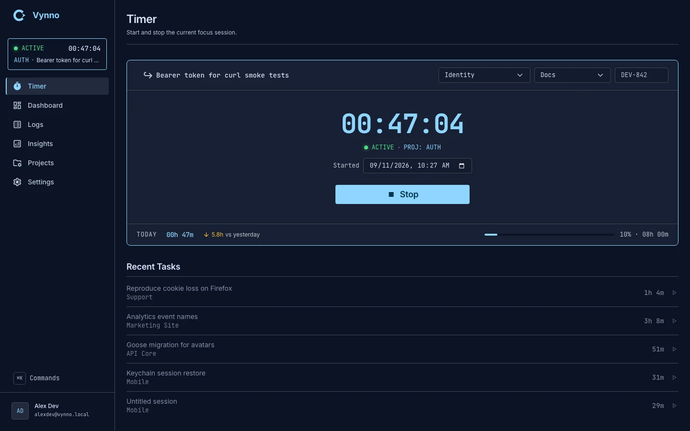
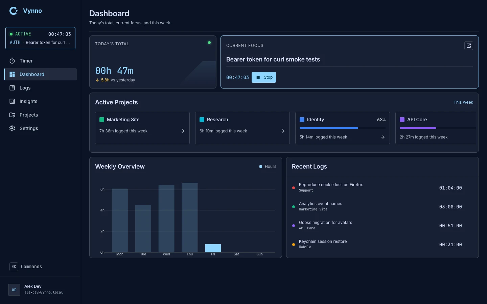
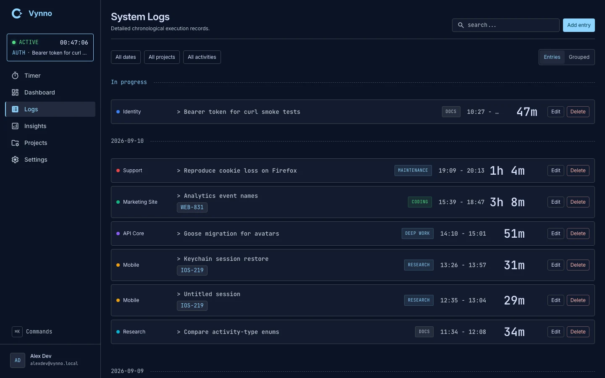
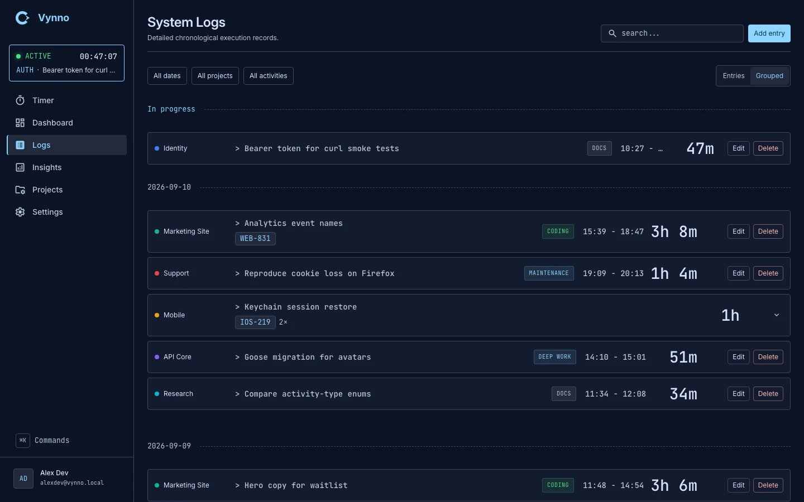
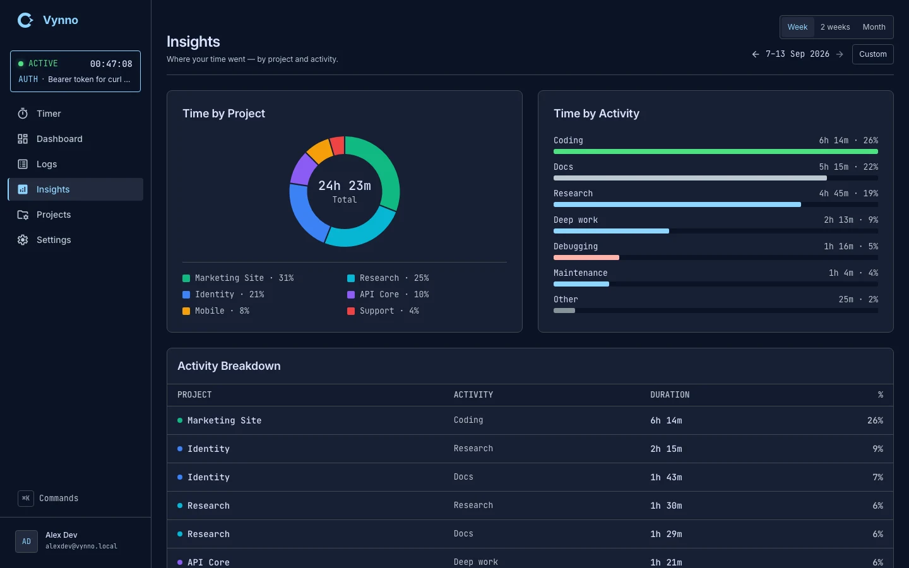
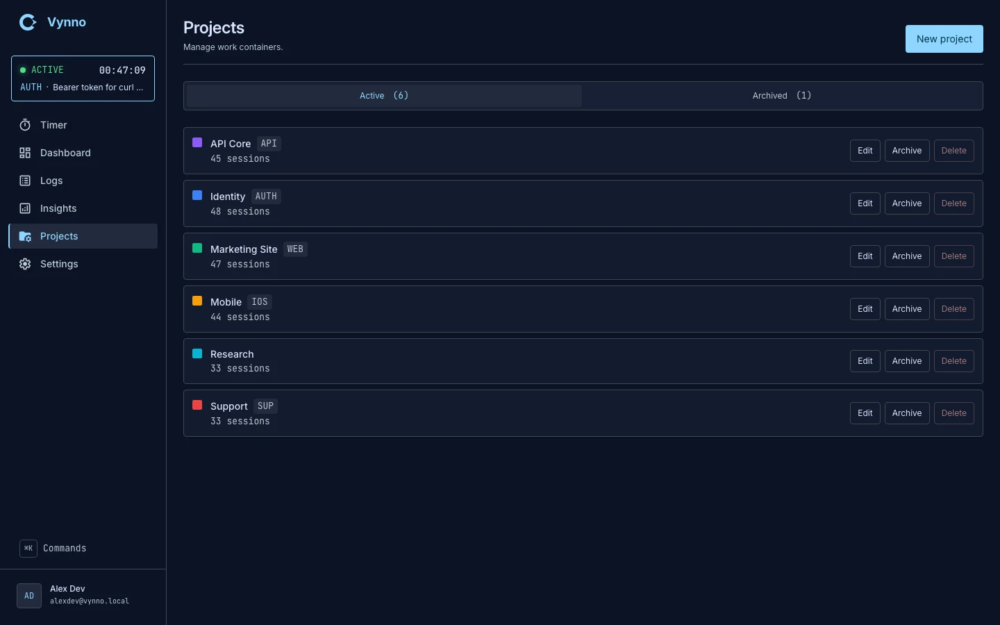
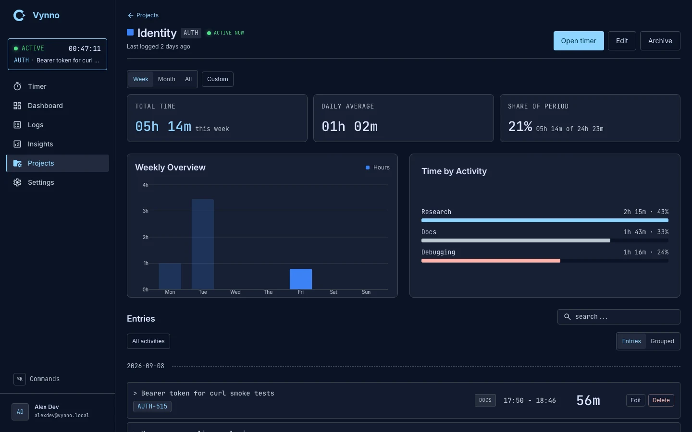
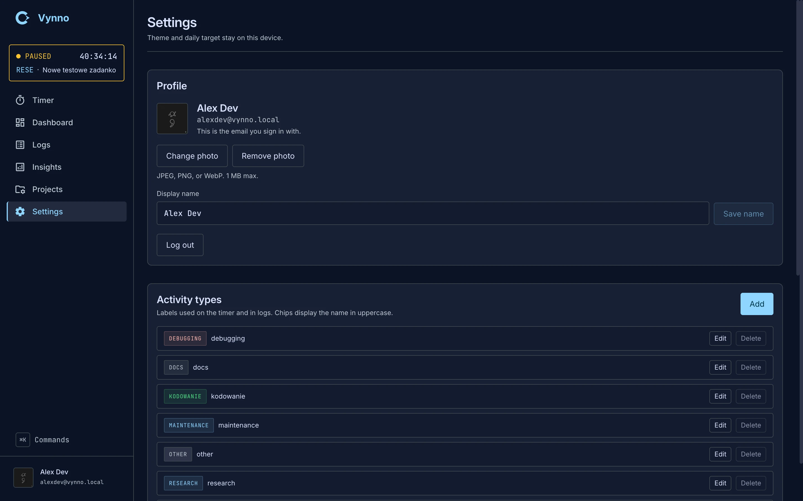

status
Local production. Not a hosted app. Source is public.

Live capture of the daily driver — active session, monospaced clock, IDE density.
how it was made
Agents write. I review. The product still has to work.
Vynno is a daily-driver focus timer and a lab for working
with AI. Two goals, side by side: something I will actually use, and a clearer sense of
what to delegate, what to read, and how to keep a product coherent.
01 plan
Agents help shape the work. I decide what ships. Design tokens, brand, and the
session model stay human decisions.
02 implement
Agents write most of the code. The stack does not change for convenience:
SvelteKit, TypeScript, Go, the same dark IDE chrome.
03 review
I read the diff. If it would not survive a workday on the timer, it does not
land. Agent output is held to the same rules as everything else.
the product
A week you can read
Keyboard-first. High density. One session at a time. Built to answer a simple
question: where did the hours go.
/timer
One active session. Start or stop. A break is a new session.

/dashboard
Today’s total, current focus, the week in bars.

/logs
Search, date and facet filters, edit or add an entry.

/logs
Grouped layout: same ticket in a day becomes one total.

/insights
Time by project and activity. Week, 2 weeks, month, or custom.

/projects
Named work with a color. Rows open the project dossier.

/projects/[id]
One project’s hours, period, and entries.

/settings
Profile, language, named themes, activity types.
architecture
Two repositories. One contract. One machine.
The UI is SvelteKit. The API is Go. They never share a process. An agent reads the
same Postgres through a local process, cmd/mcp. Daily
production is loopback HTTPS on this laptop — not a cloud host.
Runtime path
A request from the daily origin travels five hops. Cookie
vynno_session stays first-party because Kit proxies
/v1. Select a node.
production
→
→
→
→
→
playground
→
agent
→
→
browser
Daily URL is https://vynno.localhost. That origin,
:27180, and 127.0.0.1 do
not share the session cookie. Bookmark the hostname, not the port.
cmd/mcp is a stdio process on this machine. It answers
questions about one account’s history. The browser path and the
/v1 contract stay as they are. Select a tool.
tools
vynno_whoami
Email and display name of the account the token names. Every other tool
returns only that history.
boundaries
Read-only. Start and stop stay on /v1.
One account. A token for A cannot read B.
Allowlist. Secret columns and avatar bytes stay out.
Local. Not an HTTP route, and not in the JSON contract.
httpserverGin, error envelope, OpenAPI from route()
serviceuse cases; depends on Store and Mailer
domainno Gin, no SQL
storesqlc + goose
mailSMTP port
SSR seed comes from +layout.server.ts. Domain rules are
enforced on the server; the client is not trusted.
Domain and session lifecycle
One user, isolated. No teams. At most one live session. A second start is
409 session_already_active — the server does not
auto-stop. A break is stop, then start. Select a state.
entities
User
Profiledisplay name, email, avatar
Project*name, color, code, archived
ActivityType*user-owned dictionary
TimeSession*note, ticket, timestamps; active or stopped
No Task table. “Recent tasks” are reconstructed from recent sessions.
lifecycle
start→stop→
active
Elapsed is now − startedAt. Stop is the only live
verb. Status is never patched.
Rendered with
archify. Sources live in
diagrams/src.
process
Write it down, then let the agent build.
The unusual part is not that agents write code. It is that the docs are the control
plane — PRD, domain, contract, ADRs, and plans that exist only while work is in
flight.
Write first
Pick the document the change belongs in. Then implement. Then keep the docs true.
Plans are deleted when the work ships; git history is the archive.
01Need
→
02Pick the doc
→
03Agent implements
→
04Read the diff
→
05Docs stay true
PRD
Vision, goals, non-goals. Not stack, not field names.
domain
Entities, lifecycles, invariants the server must enforce.
contract
Paths, DTOs, status codes. Amend this before the handler.
ADR
Expensive or irreversible choice. Keep the file; amend, don’t rewrite.
plan
In-flight only. Move facts into the canonical docs, then delete it.
Read one account’s history through the local MCP. Cannot start, stop, or edit
a session from it.
Do not invent endpoints or rewrite history
Roadmap
API phases 0–4 shipped, then profile, seed, activity types, session mutate, mail,
and Swagger on the same host. Phase 5 is later, and only via a contract amendment.
Daily URL is https://vynno.localhost. That origin,
:27180, and 127.0.0.1 do not share
the session cookie. Bookmark the hostname, not the port.
Loopback Caddy terminates TLS on 127.0.0.1:443 and redirects
:80. Certificates are tls internal.
No LAN bind, no Let’s Encrypt. FE ADR-0014
adapter-node on 127.0.0.1:27180. SSR
is on. First-paint data comes from
+layout.server.ts. FE ADR-0011 · 0014
The browser calls same-origin /v1. Kit proxies to
API_ORIGIN and forwards Set-Cookie,
so vynno_session is first-party.
Compiled bin/vynno-api on
127.0.0.1:27182. Gin at the edge; session and project rules in
internal/domain. API ADR-0001 · 0011
Docker Compose Postgres. Database vynno is daily history. sqlc
queries, goose migrations at boot. Do not
docker compose down -v. API ADR-0009
scripts/dev is go run on
:8081. Frontend e2e talks here. It does not share rows with
production.
Database vynno_dev. Seed and reset are allowed here and refuse
any other name. Production vynno has no wipe script.
Grok starts go run ./cmd/mcp from
.grok/config.toml. The process speaks stdio. The agent
receives tool results, not SQL. API ADR-0016
cmd/mcp checks VYNNO_MCP_TOKEN at
boot and again on every tool call. That secret is the same opaque token the API accepts
as Authorization: Bearer.
go run ./cmd/mcp token prints one; it lasts 30 days, and a
password reset revokes it. A missing or dead token refuses the process. Logs go to
stderr. No migrations, and no Gin. ./scripts/build also writes
bin/vynno-mcp. API ADR-0016
Same daily database as production, vynno, via
DATABASE_URL. Queries are an allowlist scoped by the token’s
user id. Password hashes, token hashes, one-time-code hashes, and avatar bytes are not
selected.
Email and display name of the account the token names. Every other tool returns only
that history.
That account’s projects. Archived rows are omitted unless
includeArchived is true.
Sessions, newest first. Optional overlap window, project, and status
(active or stopped). Limit defaults
to 50 and caps at 200. A live session’s duration runs until now.
The live timer, or idle when nothing is running. At most one active session.
Overlap totals for a window, grouped by project, activity, or UTC day.
from and to are RFC3339, or
YYYY-MM-DD in UTC (a date used as
to includes that whole day). A session that crosses midnight
is split. Totals are computed here; /v1 grows no aggregate
route.
No live session. GET /sessions/active is
404 session_not_active. Timer shows empty or the last note,
ready to start.
Elapsed is now − startedAt. Stop is the only live verb. Status
is never patched.
Log entry. Restart is a new POST /sessions, never a mutate of
this row back to live. Edit and delete are allowed. A break is stop, then start.